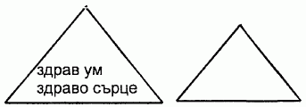
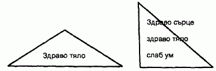
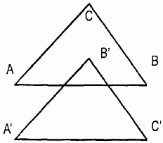
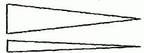
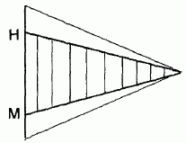

Беседа 3747 от 3877 · Беинса Дуно
Геометрически съотношения
"Отче наш"
"Сила, здраве е богатство"
Каква беше основната мисъл на миналата лекция? – Каза се.
Ако някой ви запита, как бихте обяснили, откъде българинът е научил да увеличава, в кое училище се е учил? Как ще обясните това противоречие, че той много обича да увеличава и много – да намалява. Отгде се е научил да увеличава? Какви са били условията, при които се е научил? Значи българинът е живял при много оскъдни условия, той не е живял при една богата среда. Ако имате един малък извор, една малка рекичка, вземете, че подпушите извора, може да направите цял вир. Ако този вир го отпушите, той като хала ще слезе надолу. Българинът се отпушва. Като потече силно, после пак е малка река. Ако обичате много да преувеличавате работите, значи, животът ви е подпушен. Всеки, който се подпушва, значи е малка река. Ти не може да подпушиш една голяма река. Един човек, за да видя каква река е, ако увеличава, той е запушена река, а като изтече, казва: Нали ти казах. Туй, дето увеличава, то е насъбраната вода. Като се подпуши, какъв голям става. (За) онези хора, които често се менят, турците казват: "Девет ума има". Каже едно нещо, после казва, след 5 минути, нещо друго, след 10 – 15 – 20 – 40 – все се мени и после като дойде, започне да се извинява; ще намери с нещо да се извини. Вие често се извинявате по този начин и мислите, че сте изправили живота си. Един човек, който има да дава 1000 лева, често може да каже: "Наведнъж ще ги платя", а сам той няма повече от 1000 лева доход. Той казва, че изведнъж ще ги плати, не казва: "Почакайте малко". Представете си един чиновник, който вземал 500 лева на месец, а има да дава 1000 лева; след колко години може да си изплати дълга? Ако гладува два месеца, може да ги изплати, но той трябва да яде. Колко може да отдели от 500 лева, ще дели по малко. Този, който има да дава 1000 лева, ако знаеше закона – всеки ден да плаща по един лев – и в няколко години ще ги изплати. В една година 360 лева, за две години 700 лева.
Аз прилагам този закон. Имате да изправите някоя черта, чакате благоприятни времена, казвате: Изведнъж. Научил си се да пушиш тютюн. Сега и жените, не само мъжете, пушат. Казва: Още една - две години искам да пуша и после изведнъж ще го оставя. Мислите ли, че изведнъж може да го остави? Казва: При лоши условия се намирам, искам да пуша. След две години, като ми се оправят работите, изведнъж ще го оставя. Мислите ли, че изведнъж може да го остави? То е невъзможно.


Какви са качествата на волята? По какво се отличава волята от надеждата и надеждата от любовта? Да кажем, имате човек, в когото вярата е силно развита; друг човек, в когото надеждата е силно развита и трети, в когото любовта е силно развита. По какво се отличават? Какви са отличителните черти на човека, на когото надеждата е силно развита? – Не се обезсърчава. Човек, в когото вярата е силно развита, не се обезверява. Онзи, в когото любовта е силна, какъв е? Снощи слушах Чомпи по радиото. След него дойде да свири друг един цигулар, който не разбира като Чомпи. И той доста хубаво свири, но в тоновете на Чомпи има нещо друго, запълнени са тоновете, завършена картина е. А онзи, който свири след него, тоновете му тук - там не са завършени и ритъмът му не е пълен. И като свири, още не е самоуверен. Свири добре, но като дойде някъде, не е самоуверен. Нали и вие, по някой път като говорите, спрете се, дали е право, млъкнете. Това млъкване е почивка, не съвсем почивка, но човек вижда да няма стълкновение в ума и после, като помисли, пак тръгва напред.
В равнобедрения триъгълник имате здрав ум и здраво сърце. В правоъгълния триъгълник – здраво сърце, здраво тяло, а слаб ум – значи, капитал няма. Сега онези от вас, в които умът е слаб, трябва да измените триъгълника. Щом е правоъгълен триъгълник, слаб е умът; щом е равнобедрен, тялото е слабо; щом сте равностранен триъгълник – добре е. Равностранният триъгълник представя добре развития човек.

У човека съзнанието трябва да бъде будно. Каква е разликата, че една ябълка е по-голяма, а друга е по-малка, от едно и също дърво. Има ли някаква разлика? По някой път вие говорите за идеален човек. Колко мъчно се постига човек да бъде идеален, защото законът на небето и законът на земята се отличават. Земният живот и небесният живот си мязат, само че са обратно пропорционални. В небето, който е най-виден, като слезе на земята, става последен. И най-последният на земята, който е нищо и никакъв, като се качи, ще бъде първият. Вие ще попитате, по човешки, защо е тъй? Може да ви докажа, но няма нужда защо да ви доказвам. Само един факт ще ви покажа. Христос, като слезе от небето, нали беше първият горе, а като дойде на земята, казват: Син Человечески няма где глава да подслони. Този, който беше пръв горе, на земята нямаше къде глава да подслони. Сега да приведа закона: Когато някой път вие се оплаквате, че сте последен на земята, защо сте последен? – Защото сте били пръв на небето. Казвате: Аз не искам да бъда последен на земята. Тогава стани последен на небето и ще станеш пръв на земята. Който иска да бъде пръв на земята, трябва да бъде последен на небето. Искате да живеете добре. Който живее добре на земята, той живее зле на небето. Който иска да живее богато на земята, трябва да живее бедно на небето. За предпочитане е да нямаме тук нищо. Ще запитате защо е така? Може да ви приведа онзи анекдот, дето един петел се качил на купището и като изкукуригал, искал да покаже на кокошките, че е много силен.
Изровил един скъпоценен камък, ритнал го, понеже толкова работа му създал, пък нищо не струва. Измъчил се, докато го изрови, искал да вика кокошките и мислел, че ще излезе едно зрънце; ритнал го. Скъпоценните камъни на небето не струват нищо на земята. На земята ти си като петела. Този петел не знаеше, че ако този скъпоценен камък го продадеше, ако имаше ум да разбира това, щеше да храни всичките петли и кокошки, които има по света. Да ги осигури най-малко за стотина години. Житното зърно на какво ще го уподобите на земята? То е скъпоценен камък на небето. Житното зърно, ако идеш с него на небето, струва много, а тук житното зърно нищо не струва. Христос казва: "Ако имате вяра колкото синапено зърно, на тази планина ако кажете "вдигни се", и тя ще се вдигне." Каква динамика има? Житното зърно в невидимия свят е тъй силно, както скъпоценният камък на земята. Като го продадеш, ти с житното зърно на небето ще бъдеш свободен, а ако идеш без житното зърно на небето, няма да ти бъде добре. Сега всичките хора на земята страдат, защото разбират нещата разхвърляно. Ти гледаш някой човек, че е учен и си мислиш: "Защо е учен?". От нас зависи. Обича науката, носът го заставя да обича науката. Какъвто е носът му, такава област от науката ще разбира. Ако изучавате човешките носове, ще видите, че носовете им ги отличават от идеите им и философи, и поети, и художници. За да познаете един човек, дали е издържлив, вгледайте се в носа му и ще видите, дали е здрав или не. Като измерите неговата дължина и неговата широчина, ще видите, колко е умен човек. Има отношение. Широчината представя сърцето, дължината представя човешкия ум. Пропорция има. Казвам: За бъдещото самовъзпитание – човек ще започне своето възпитание и неговите методи при самовъзпитанието ще бъдат много по-продуктивни.
Ако правите едно упражнение – лявата ръка движете от рамото до лакътя на дясната, тогава ще си въздействате върху волята. Ако лявата ръка движите от лакътя на дясната до китката, ще си въздействате на вашето сърце и ако лявата ръка движите по дясната китка, ще си въздействате на ума. Ако правите това движение върху показалеца, ще въздействате на вашите лични чувства. Ако правите същото това движение върху средния пръст, ще си въздействате на вашето сърце. Ако действате върху безименния пръст, ще си въздействате върху чувството на красивото, ще събудите у вас музикалност. Ако въздействате на малкия си пръст, ще събудите у вас обич към търговията. Някой път гледате, някой човек си хванал малкия пръст, той се упражнявал в търговията. Той сам това не знае. След няколко време казва: Искам да търгувам. Някой човек хване безименния си пръст и казва: Дойде ми на ум да свиря, какъв инструмент ще ми препоръчате – пиано, цигулка, китара или флейта? Някой пипне средния си пръст и иска да урежда социалния въпрос. Като хване показалеца си, той се интересува за религиозни въпроси, за достойнство се интересува. Българинът, като забрави нещо, туря си ръката на челото и мисли. Някой сметка прави, тури си показалеца отстрани на челото. Там е центърът на смятането. Като тури пръста си там, въздейства на центъра на смятането. Възбужда го как да направи смятането. В средата на челото е центърът на паметта, центърът на общата памет. Някой път забравил нещо човек, и за да си спомни някои неща, туря си пръста там, за да влезе повече светлина, да си спомни по-скоро. Когато някой път съвсем закъса човек, хване си с двете ръце главата отстрани. Това прави, за да си даде смелост. От двете страни на главата се намира центърът на смелостта. Ръцете са два полюса на живота, едната ръка е положителна енергия, а другата е отрицателна енергия. Да се отнасяте добре с вашите ръце, които са полюси и през които текат Божествени енергии. От едната страна на ръката тече една енергия до краката, а от другата страна – друга енергия. Енергиите, които текат през човешкото тяло, се предават на земята; непотребната енергия минава в земята. Някой път трябва да се изувате боси, та непотребното във вас да отиде в земята. Някои ходят боси по росата; росата като навлажни краката, всичките непотребни сили у човека отиват в земята. И той възприема друга енергия от земята. Хубаво е, когато е топло, лятно време да ходите боси, да стане една обмяна между земята и човека. Не препоръчвам сутрин рано, но когато слънцето е огряло тревата, тогава да ходите. Също, когато слънцето изгрява, хубаво е две минути да гледате слънцето, то въздейства благотворно върху очите, но още като изгрява слънцето, не по-късно. Това са здравословни правила, хигиенични правила за живота. Тях ги няма писани в никаква книга, за бъдеще може да се пишат. Сега вие първо ги опитайте, не ги разправяйте на другите, но всичко това проверете. Това са правила; може да намерите някои изключения и ще кажете, това не е вярно. Това са верни работи, но трябва да се проверят.
На един равнобедрен триъгълник основата му каква трябва да бъде?


Онези хора, които имат къси пръсти, у тях обобщението е силно развито. По какво се отличава човек, който има силно обобщителна мисъл? Онези, които обичат фактите, дълги пръсти имат. Човек с къси пръсти ще обиколи нивата и ще види общите работи, а онзи, с дългите пръсти, ще обиколи нивата и ще разгледа детайлите вътре. У когото обобщителната мисъл е развита, разглежда общото, а онзи, с дългите пръсти, обича детайлите. Някои от вас казвате: Кажи ми нещо, изведнъж да зная. Такъв човек е с обобщителна мисъл. Някои по музика искат в един ден да изучат всичко. Имаше тук една професорка по музика, няма да й кажа името, тя имаше къси пръсти. Сега така й натегнало, че не иска да й свирят. Като свирят, бяга, бяга от музиката. Няма нещо, което да я интересува дълбоко вътре. Казвам: В живота трябва да намерим едно вътрешно съдържание. Вие по някой път се обезсърчавате, с къси пръсти сте; малко по-дълги трябва да ви станат пръстите.
Само светлият път на Мъдростта води към Истината. В Истината е скрит животът!
30. Лекция на Младежкия окултен клас, държана от Учителя на 28.V.1943г., Петък – 5 ч. с., София – Изгрев